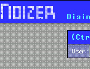
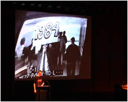

- tracenoizer -
|  |
Den Sprung in die reale Welt schafft das Internetprodukt mit dem Angebot des TraceNoizer-T-Shirts. . Zu diesem Zweck werden von TraceNoizer alle Daten, die in Zusammenhang mit dem User stehen analysiert und daraus eine persoenliche Homepage geschaffen. Alle gesammelten Informationen werden praktisch geklont und die daraus entstehende neue Page automatisch auf einen Server mit freiem Webspace geladen. Dort verlieren sich dann die Spuren fuer den Datenjaeger. |
|
Den Sprung in die reale Welt schafft das Internetprodukt mit dem Angebot des TraceNoizer-T-Shirts. . Zu diesem Zweck werden von TraceNoizer alle Daten, die in Zusammenhang mit dem User stehen analysiert und daraus eine persoenliche Homepage geschaffen. Alle gesammelten Informationen werden praktisch geklont und die daraus entstehende neue Page automatisch auf einen Server mit freiem Webspace geladen. Dort verlieren sich dann die Spuren fuer den Datenjaeger. |
There is information about most people in the Internet. To protect this data, one has to systematically falsify this information. First, enter your first name and your last name into the form on the TraceNoizer Homepage, then click on "run". TraceNoizer searches for information connected to your first name and surname on the Internet, then analyzes it using statistical means. Finally TraceNoizer generates a personal homepage for you.
|  |
|
knowbotic research builds data bodies from the many personal traces we leave when using forms of digital communi-cation. In this installation, visitors can activate the databodies of several ART Basel -participants, while these data streams in turn trigger acoustic and optical signals, and thus provide a spatial experience. Professional cloning assistance by TraceNoizer creators. TraceNoizer provides a tool, which enables the users to clone their databodies, multiply their userprofile and thus anonymize oneself online. (featuring LAN and knowbotic research) All databodies of the ART Basel participants get cloned and protected during the week of the Art Fair. |
A site I really like: http://www.tracenoizer.org